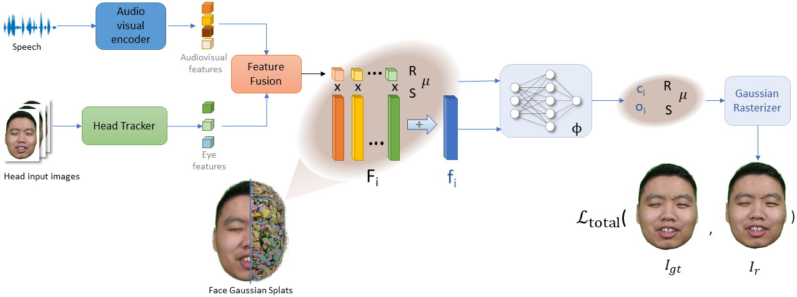
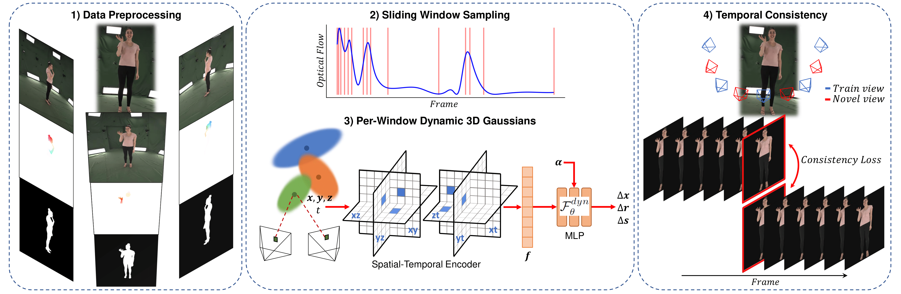

Use Case 1
This work presents Interactive Conversational 3D Virtual Human (ICo3D), a method for generating an interactive, conversational, and photorealistic 3D human avatar. Based on multi-view captures of a subject, we create an animatable 3D face model and a dynamic 3D body model, both rendered by splatting Gaussian primitives. Once merged together, they represent a lifelike virtual human avatar suitable for real-time user interactions. We equip our avatar with an LLM for conversational ability. During conversation, the audio speech of the avatar is used as a driving signal to animate the face model, enabling precise synchronization. We describe improvements to our dynamic Gaussian models that enhance photorealism: SWinGS++ for body reconstruction and HeadGaS++ for face reconstruction, and provide as well a solution to merge the separate face and body models without artifacts. We also present a demo of the complete system, showcasing several use cases of real-time conversation with the 3D avatar. Our approach offers a fully integrated virtual avatar experience, supporting both oral and written form interactions in immersive environments. ICo3D is applicable to a wide range of fields, including gaming, virtual assistance, and personalized education, among others.
Method Overview. Users interact with the avatar via text or audio queries, processed by an LLM to produce a textual answer, then converted to audio. The speech drives the head model (HeadGaS++) and determines the body dynamics through procedural body animation (SWinGS++). 3D Gaussians for head and body are integrated and rendered from novel views, producing free viewpoint video synchronized with audio speech.
Our 3D Gaussians Decoder learns to detect and describe 3D primitives from 2D images, depths and latent features.
Our 3D Gaussians Decoder learns to detect and describe 3D primitives from 2D images, depths and latent features.
Fine-tuning VGGT for rendering with our method enables to avoid depth estimation failure cases in specular or sky areas.

We also observe that our fine-tuning improves camera pose and focal length estimations, check the paper for more details !
@article{shaw2025ico3d,
title={ICo3D: An Interactive Conversational 3D Virtual Human},
author={Shaw, Richard and Jang, Youngkyoon and Papaioannou, Athanasios and Moreau, Arthur and Dhamo, Helisa and Zhang, Zhensong, and P{\'e}rez-Pellitero, Eduardo},
journal={arXiv preprint},
year={2025}
}